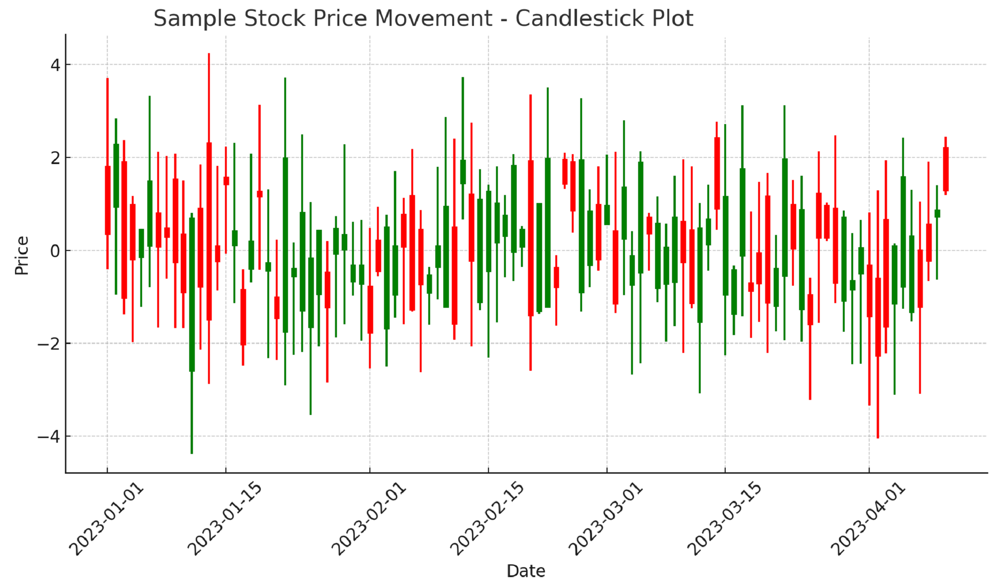

CS50 by Harvard University
In the final project for Harvard's CS50 Introduction to Computer Science, we, Mark Marner-Hausen and Lennart Struth, built a web application that simulates a stock trading platform. This app allows users not only to engage in standard long positions but also to explore short positions, a feature often unavailable in conventional retail trader apps in Germany for financial literacy reasons.

A key feature of our app is a leaderboard that ranks users based on their realized profits, fostering a sense of community and competition.
This serves an educational purpose by enabling users to test complex trading strategies risk-free and compare their performance with peers.
The app provides a realistic trading experience with real-time price movements, sourcing asset prices from the Finnhub API based on IEX prices.
From a technical standpoint, we developed a class dedicated to managing database connections and executing queries based on specific
parameters. Additionally, we integrated graphical visualizations to display the performance of individual stocks and the user's portfolio,
enhancing the user experience and providing valuable insights into market trends and personal investment strategies. This project not only
showcases our programming skills but also our understanding of financial market dynamics and user interface design.